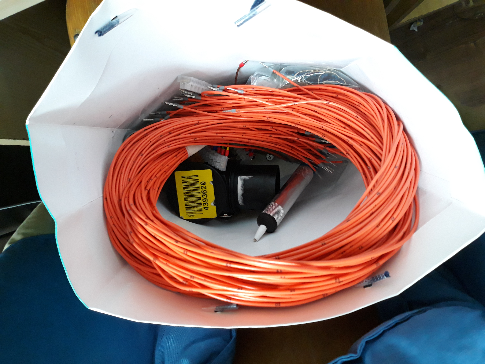
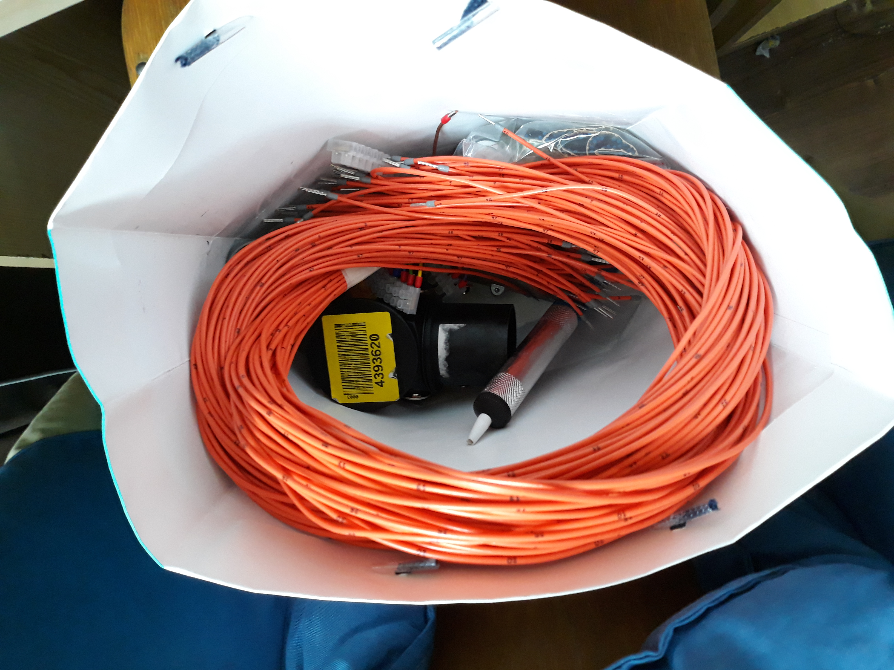
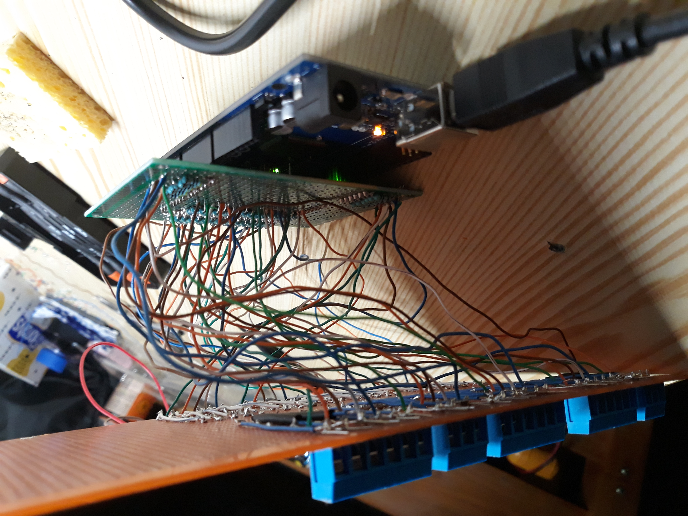
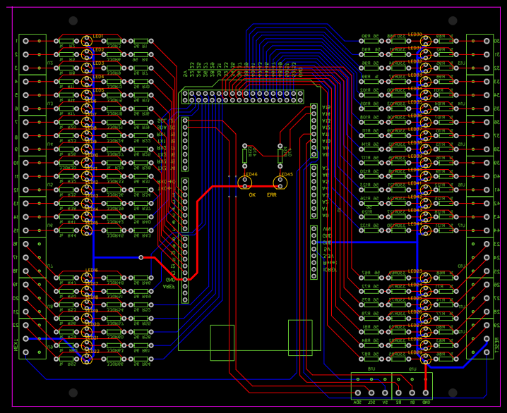
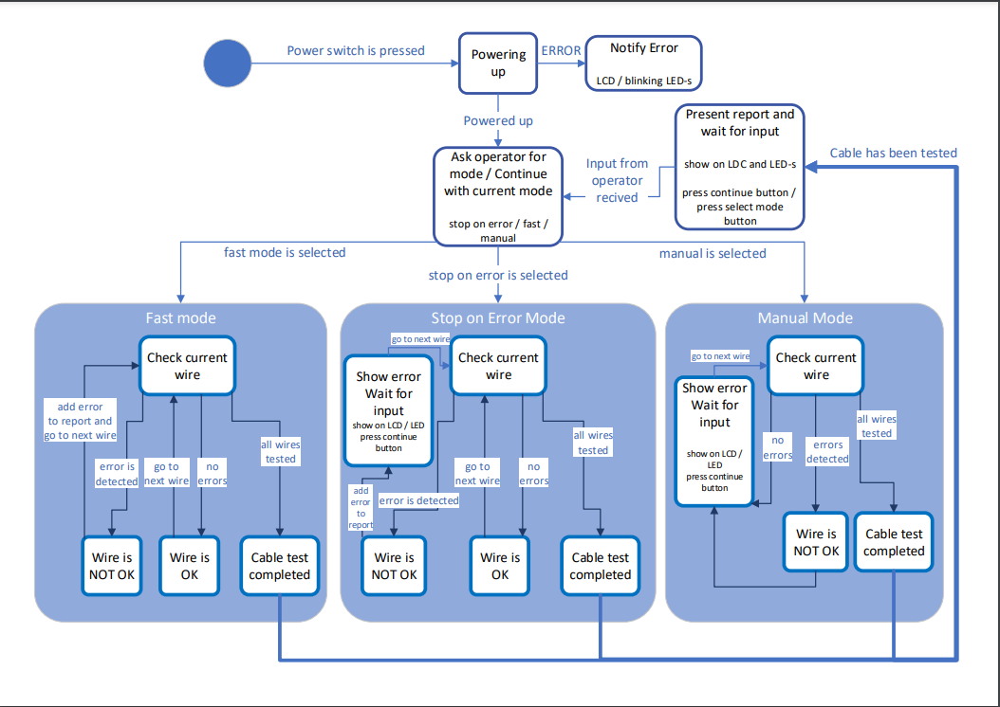
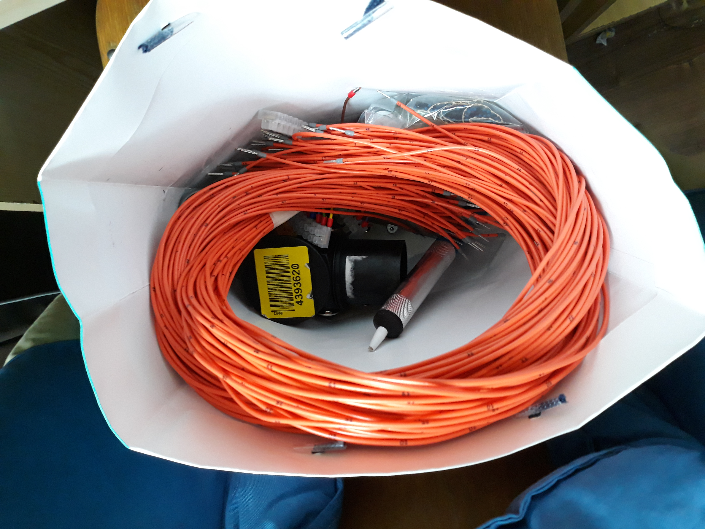

A factory from Cluj, called "Renolith", needed of a cable tester for a cable with many wires inside.
Due to good relations with the "Applied Informatics" university teacher at UTCN, they opted to fund the
building of such a device, so that one student can glimpse at the world of electronics engineering.
As it turns out, that student was I. It was a great opportunity to learn, so I did not turn it down.
The end goal of the project is a Cable tester for multiple wire cables. It does:
The problems encountered in the area of electronics are the high number of wires, and such the
high numbers of components used, and the uncertainty of how many LED-s need to be powered by an Arduino pin.
Due to the high number wires, using a control circuit for each one of them was out of the question.
The interface consists of a LED for each wire, a master OK LED, a master ERROR LED and 2 buttons (reset, next).
The wire LED-s light up whether signal is sent through the wire or received.
The prototype proved to be very difficult to build, again, due to the high number of components. In order to fit everything, I had to use 2 boards: one connected to the Arduino like a shield, and the second one (much bigger) connected with 44 hand soldered wires.
After testing the prototype and making sure it works, I began working on the finished product. I am currently waiting for the ordered PCB. It will merge the 2 boards used in the prototype so that the whole device is actually an Arduino mega shield.
This part is up to the mechanical engineers at Renolith.
The programming was done in Arduino language. It consists of three major parts:
The cable template matrix holds information about which wire should be connected to which wire.
The error matrix encodes the types of errors found on each wire.
The error detection algorithm runs through all wires, one by one, sets each one as an output and checks
what other pins are connected to it. By consulting the template matrix, it determines if the signal was
detected on correct wires. If not, the errors are added to the error matrix.
Here is a state diagram of the device:

